Learning Objectives
After completing this lesson, you’ll be able to:
- View your data’s schema.
- Edit your data’s schema, including feature type and attribute names.
Instructions
In this lesson, you will:
- Scroll down to read the text below.
- Complete the exercise by following the steps.
- Complete the Quiz toward the bottom of the page.
- Optional: Let us know if you found this lesson relevant to your role by filling out the survey at the bottom of the page.
- Click 'Next' to mark the lesson complete.
Resources
Editing Schema
Manipulating schema (the formal definition of a dataset’s structure) is a key process in FME. When creating an FME workspace that modifies schema, there are generally two steps:
- Edit the schema: define what schema you want for the written data. In FME, this is done by changing the feature type parameters to reflect what you want, e.g., changing attribute or feature type names.
- Map the schema: define the relationship between the source schema (what you have) and the destination schema (what you want). In FME, this is accomplished by using transformers to define how the old and new schema are related.
We’ll cover these two steps in this lesson and the next.
View Reader Feature Type Schema
You can view the schema for your reader feature types by double-clicking a reader feature type. Note, however, that the schema cannot be modified on a reader feature type. If you wish to modify your data in place, you'll have to add a writer feature type for the table or layer you'd like to modify.
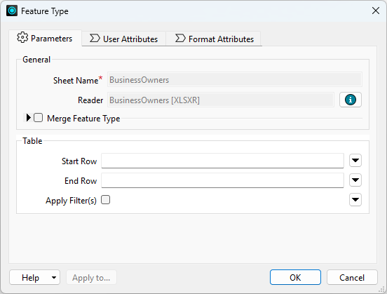
View and Edit Writer Feature Type Schema
The writer Feature Type dialog contains all of the data’s schema information:
- Feature type name (in the example below, Feature Class or Table Name, but it varies by format)
- You can edit this to reflect the name of the table or layer you wish to write.
- In some cases, the name of a feature type will be the same name as the file created. In other cases, such as with files containing multiple tables or layers, the feature type indicates the name of the table or layer, not the file.
- The first parameter in all writer feature type dialogs indicates what will be created, e.g., Feature Class or Table Name for geodatabases or Sheet Name for Excel.
- You can set the output file or folder name in the first parameter under the writer in the Navigator.
- Attribute names (in the User Attributes tab under the Name column)
- Attribute data types (in the User Attributes tab under the Type column)
- Geometry defintion (in the User Attributes tab under the Geometry Definition group)
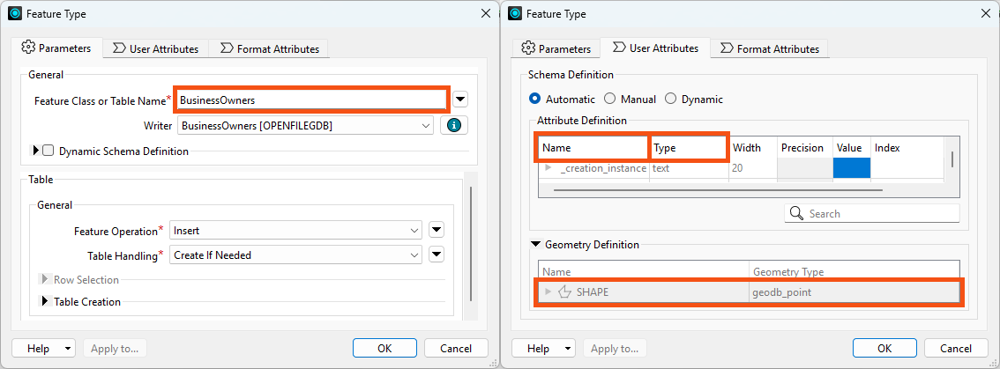
Scenario
Jennifer continues working on her workspace. This workspace creates an Esri geodatabase from JSON. Jennifer would like her geodatabase to have a different schema from her source data. She’d like to make the following changes:
- Change some attributes so they make more sense to the public and match destination system requirements:
- All attributes should be lowercase
- “first” renamed to “first_name” to match “last_name”
- Move “last_name” to the first column
- Remove “latitude,” “longitude,” and all HTTPCaller/JSONFragmenter attributes
Jennifer's writer feature type currently has the same schema as the source data. She now has to edit the schema to get the desired results.
1) Open Starting Workspace
- Start FME Workbench (2026.1 or later).
- Open the starting workspace (C:\FMEData\Workspaces\IntegrateDataWithTheFMEPlatform\edit-datas-schema.fmw).
2) View Current Writer Schema
The first step is to view the current writer schema.
- Double-click on the BusinessOwners writer feature type to open its dialog.
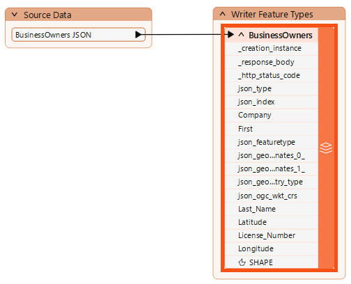
3) Choose an Attribute Definition Mode
We used Automatic Feature Type Definition mode when we added the geodatabase writer feature type. This mode sets the feature type's schema to match its given features.
At this point, we have two options for changing the schema of the destination data:
- Continue to use Automatic mode and change the schema of the features using transformers.
- Change to Manual mode, manually define the destination schema, and then use transformers to set the schema on the features to match.
Option two might seem like more work, and it is! However, both approaches can be valid. Automatic mode has to infer the data type, which is (rarely) incorrect.
So, we will switch to Manual mode in the next step.

In the next lesson, we'll show you how it would work with Automatic. Don't worry about Dynamic; it's an advanced option.
4) Edit Writer Feature Type Attributes
Let's change the writer feature type Attribute Definition mode to Manual.
- Click the User Attributes tab to view the attributes we want to edit.
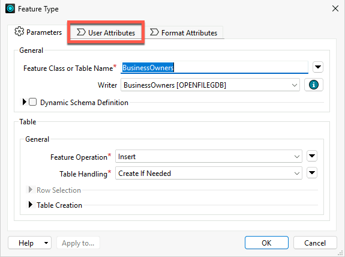
Currently, none of the attributes can be edited because the feature type is still in Automatic Attribute Definition mode.
- Click Manual to change the mode.
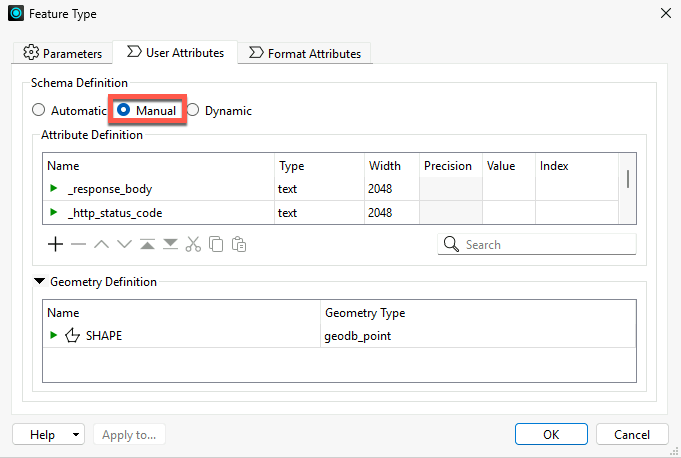
Now, the table of attributes can be edited. We can rename them, change their type, reorder them, or add a new attribute.
The next step is to remove the attributes we do not want.
- Ctrl+ (or Cmd+) clicks on the following attributes one at a time to select them all:
- _response_body
- _http_status_code
- json_type
- json_index
- json_geometry_coordinates_0_
- json_geometry_coordinates_1_
- json_geometry_type
- json_ogc_wkt_crs
- Latitude
- Longitude
- After they are all selected, click the Remove Row (minus sign) button in the bottom left to remove them.
- What does this mean now that these attributes are removed?
- It means the written data will not contain them, even if they are present on the features going into the writer.
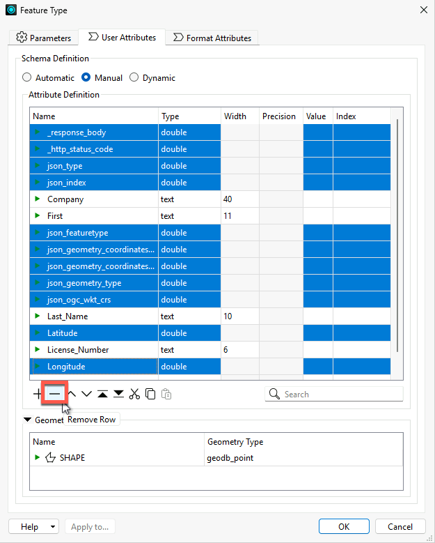
Next, reorder the attributes.
- Click on a row to select it.
- Then use the up and down triangle buttons at the bottom of the table to change their order.
- Use the Move Down and Move Up buttons to move attributes into the following order:
- Last_Name
- First
- Company
- License_Number
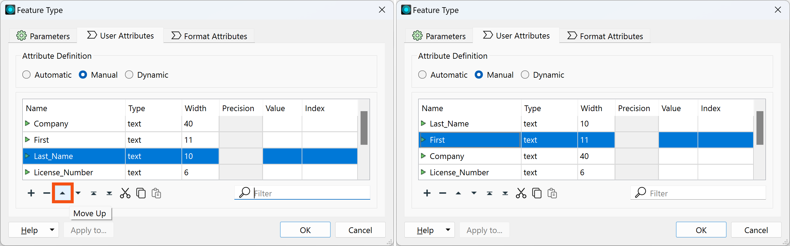
- Next, rename “First” to “first_name” by typing it in the Name cell of the table.
- Also, change all the other attributes to lowercase.
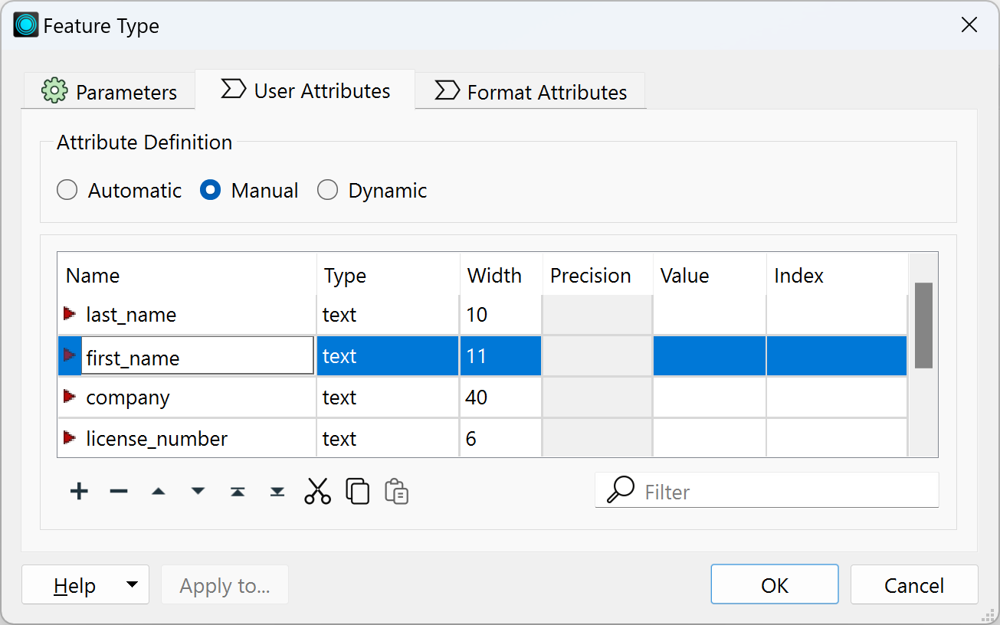
- Click OK to exit the dialog and apply the changes.
5) View Data with Edited Schema
Let's preview the data with the edited schema.
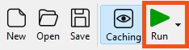
- Once the workspace finishes, click the BusinessOwners feature type once to select it.
- Then click View Written Data.
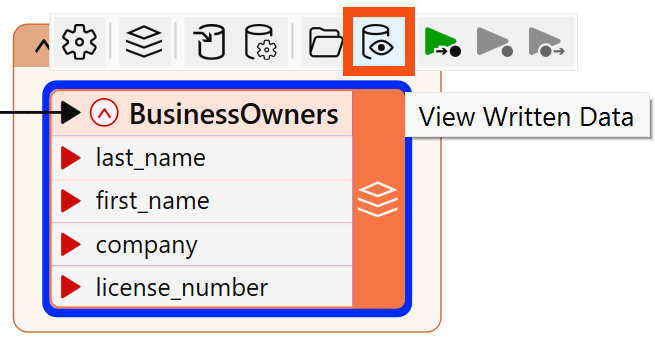
- The data appears in Data Preview.
- Observe in Table View that the schema has been edited, but the data is missing.
- This is because the features going into the writer feature type have attributes with different names.
- Note that the Esri Geodatabase writer added the OBJECTID column, which is required by the format.
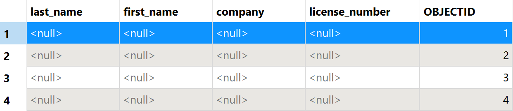
In the next lesson, to ensure the correct values are provided for the written data, we must map our schema, connecting the source and destination schemas.
Leave Us Feedback on This Lesson